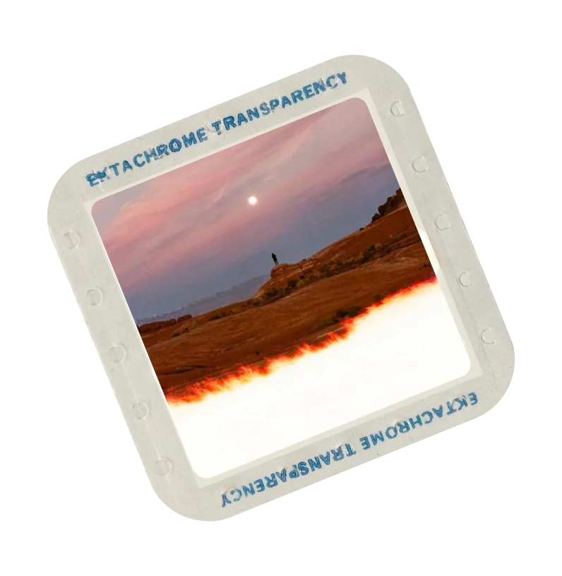
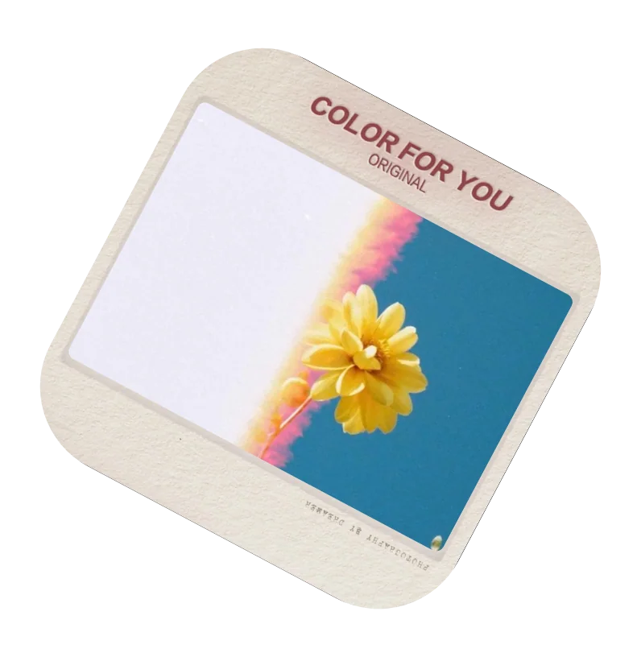
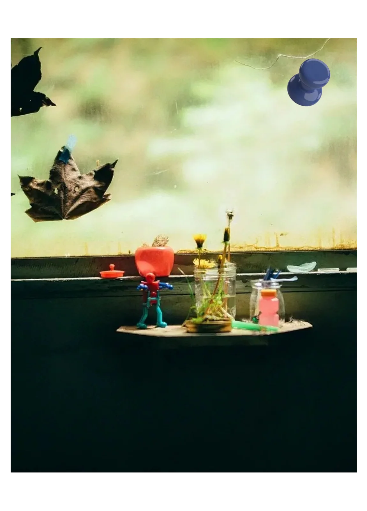
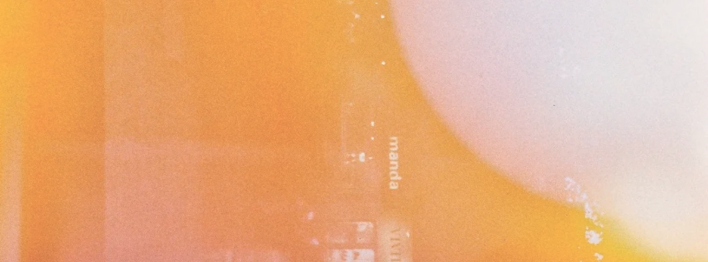

上传作品
上传作品 登录/注册
登录/注册

For Those Who Believe in
Tangible Memories:
-
Welcome to the Film Era!


今日全球拍摄卷数：671052
前言
在摄影的时光长河里，胶片始终是承载记忆的魔法载体。它还有个优雅的首译"非林"，以寓古质感为影像刻下独一无二的温度。
1886年弗洛·伊士曼采用柔性片基础碘化银玻璃底片，开启胶片摄影的黄金时代。从黑白胶片的历质诗学，到彩色胶片的三原色添层；从胶片的日常记录，到反转片的直出神秘，不同的感度让它在最现场的光中自由呼吸——低感细腻如初，高感狂野如夜。
柯达的厚重、富士的明快、乐凯的本土情怀，曾让胶片里里外外时潮时代光影。即便数字浪潮席卷而来，胶片仍以可替代性魅力诞生：化学反应催生的自然色彩、大气感度下的细节保留、放大后依旧细腻的颗粒质感，让它在艺术创作中始终是光影诗人的执念之选。

「
精选
」
精选
资讯
|
Focus
...


「
知识
」
知识
仓库
|
Base


「
菲林
」
菲林
社区
|
Community

菲林社区：光影交织热爱者的乌托邦
在数字洪流席卷一切的时代，
我们执着地守护着胶片的独特浪漫
—— 那些细腻的颗粒感、
不可复制的色彩偏差、
等待显影时的忐忑期待，
都在这里找到了共鸣的声音。


「
历史
」
历史
长廊
|
History

